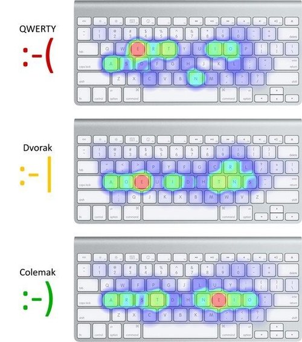

We'll start from the basics: Typing
We as programmers type a LOT !
Thus, I was in search of the most efficient way to do it.
First step: Ditch QWERTY
I was very fast at typing in QWERTY, around 100 WPM,
but it got to a stage where they layout felt very weird (same finger biagrams).
Maybe, I was too lazy to progress 😅 (there are QWERTY typers with 200+ WPM).
Sadly QWERTY never was a "performance" layout 😔
more about this here
